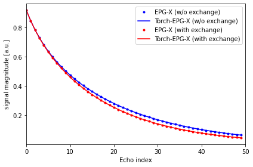
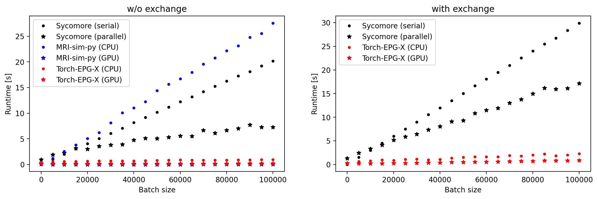

EPG Benchmark#
We will compare accuracy and runtime with Sycomore and mri-sim-py. We will simulate a Fast Spin Echo acquisition for Myelin Water Fraction mapping (with and without exchange between myelin water and free water).
First, we define some utilities to plot signals:
%matplotlib inline
import numpy as np
import matplotlib.pyplot as plt
# plotting
def display_signal(input, legend=None, symbol='-', color=None):
if color is not None:
plt.gca().set_prop_cycle(plt.cycler("color", color))
plt.plot(abs(input), symbol)
plt.xlim([0, len(input)])
plt.xlabel("Echo index")
plt.ylabel("signal magnitude [a.u.]")
if legend is not None:
plt.legend(legend)
plt.tight_layout()
---------------------------------------------------------------------------
ModuleNotFoundError Traceback (most recent call last)
Cell In[1], line 1
----> 1 get_ipython().run_line_magic('matplotlib', 'inline')
3 import numpy as np
4 import matplotlib.pyplot as plt
File /opt/hostedtoolcache/Python/3.12.1/x64/lib/python3.12/site-packages/IPython/core/interactiveshell.py:2456, in InteractiveShell.run_line_magic(self, magic_name, line, _stack_depth)
2454 kwargs['local_ns'] = self.get_local_scope(stack_depth)
2455 with self.builtin_trap:
-> 2456 result = fn(*args, **kwargs)
2458 # The code below prevents the output from being displayed
2459 # when using magics with decorator @output_can_be_silenced
2460 # when the last Python token in the expression is a ';'.
2461 if getattr(fn, magic.MAGIC_OUTPUT_CAN_BE_SILENCED, False):
File /opt/hostedtoolcache/Python/3.12.1/x64/lib/python3.12/site-packages/IPython/core/magics/pylab.py:99, in PylabMagics.matplotlib(self, line)
97 print("Available matplotlib backends: %s" % backends_list)
98 else:
---> 99 gui, backend = self.shell.enable_matplotlib(args.gui.lower() if isinstance(args.gui, str) else args.gui)
100 self._show_matplotlib_backend(args.gui, backend)
File /opt/hostedtoolcache/Python/3.12.1/x64/lib/python3.12/site-packages/IPython/core/interactiveshell.py:3633, in InteractiveShell.enable_matplotlib(self, gui)
3612 def enable_matplotlib(self, gui=None):
3613 """Enable interactive matplotlib and inline figure support.
3614
3615 This takes the following steps:
(...)
3631 display figures inline.
3632 """
-> 3633 from matplotlib_inline.backend_inline import configure_inline_support
3635 from IPython.core import pylabtools as pt
3636 gui, backend = pt.find_gui_and_backend(gui, self.pylab_gui_select)
File /opt/hostedtoolcache/Python/3.12.1/x64/lib/python3.12/site-packages/matplotlib_inline/__init__.py:1
----> 1 from . import backend_inline, config # noqa
2 __version__ = "0.1.6" # noqa
File /opt/hostedtoolcache/Python/3.12.1/x64/lib/python3.12/site-packages/matplotlib_inline/backend_inline.py:6
1 """A matplotlib backend for publishing figures via display_data"""
3 # Copyright (c) IPython Development Team.
4 # Distributed under the terms of the BSD 3-Clause License.
----> 6 import matplotlib
7 from matplotlib import colors
8 from matplotlib.backends import backend_agg
ModuleNotFoundError: No module named 'matplotlib'
Reference implementation#
Reference implementations of using [mri-sim-py](mri-sim-py](https://github.com/utcsilab/mri-sim-py) (Pytorch backend, GPU-accelerated, no exchange, magnetization transfer or flow) and Sycomore (C++ backend, CPU-only, not parallelized across multiple atoms, accounts for exchange, magnetization transfer and flow).
# load ground truth EPG-X data
import scipy
ground_truth = scipy.io.loadmat("epgxsignal.mat")
sig0noex = ground_truth["s0"].squeeze()
sig0ex = ground_truth["s"].squeeze()
# mri-sim-py implementation
import time
import torch
import mrisimpy as simpy
def mrisimpy_fse(flip, ESP, T1, T2, device="cpu", verbose=False):
# sequence parameters
flip = torch.as_tensor(flip, dtype=torch.float32, device=device)
flip = torch.deg2rad(flip)
# convert to array
T1 = torch.atleast_1d(torch.as_tensor(T1, dtype=torch.float32, device=device))
T2 = torch.atleast_1d(torch.as_tensor(T2, dtype=torch.float32, device=device))
# broadcast
T1, T2 = torch.broadcast_tensors(T1, T2)
# do computation
t0 = time.time()
signal = simpy.FSE_signal(flip[None,:], ESP, T1, T2).squeeze()
t1 = time.time()
if verbose:
return signal.detach().cpu().numpy(), t1-t0
else:
return signal.detach().cpu().numpy()
# Sycomore implementation
import multiprocess as mp
import sycomore
from sycomore.units import *
def _sycomore_fse(flip, ESP, T1, T2, T1b=None, T2b=None, k=None, fb=None):
# parse
npulses = flip.shape[0]
# initialize spin system
if T1b is None:
species = sycomore.Species(T1, T2)
# initialize model
model = sycomore.epg.Regular(species)
else:
species_a = sycomore.Species(T1, T2)
species_b = sycomore.Species(T1b, T2b)
M0a = np.asarray([0.0, 0.0, 1-fb], dtype=np.float64)
M0b = np.asarray([0.0, 0.0, fb], dtype=np.float64)
k_a = k * fb
# initialize model
model = sycomore.epg.Regular(species_a, species_b, M0a, M0b, k_a)
# initialize output
signal = np.zeros(npulses, dtype=np.complex64)
# excitation
model.apply_pulse(90.0 * deg)
# loop over flip angles
for n in range(npulses):
# apply relaxation
model.relaxation(0.5 * ESP)
# shift states
model.shift()
# apply rf
model.apply_pulse(flip[n])
# shift states
model.shift()
# apply relaxation
model.relaxation(0.5 * ESP)
# record signal
signal[n] = model.echo
return signal
def sycomore_fse(flip, ESP, T1, T2, T1b=None, T2b=None, k=None, fb=None, verbose=False, parallel=False):
# sequence parameters
flip = np.asarray(flip) * deg
ESP = ESP * ms
# convert to array
T1 = np.atleast_1d(np.asarray(T1))
T2 = np.atleast_1d(np.asarray(T2))
if T1b is not None:
T1b = np.atleast_1d(np.asarray(T1b))
T2b = np.atleast_1d(np.asarray(T2b))
k = np.atleast_1d(np.asarray(k))
fb = np.atleast_1d(np.asarray(fb))
# broadcast
if T1b is None:
T1, T2 = np.broadcast_arrays(T1, T2)
else:
T1, T2, T1b, T2b, k, fb = np.broadcast_arrays(T1, T2, T1b, T2b, k, fb)
# units
T1 = T1 * ms
T2 = T2 * ms
if T1b is not None:
T1b = T1b * ms
T2b = T2b * ms
k = k * Hz
# get natoms
natoms = T1.shape[0]
# run
if parallel is False:
engine = _sycomore_fse
t0 = time.time()
if T1b is None:
signal = [engine(flip, ESP, T1[n], T2[n]) for n in range(natoms)]
else:
signal = [engine(flip, ESP, T1[n], T2[n], T1b[n], T2b[n], k[n], fb[n]) for n in range(natoms)]
t1 = time.time()
if verbose:
return np.stack(signal, axis=0).squeeze(), t1-t0
else:
return np.stack(signal, axis=0).squeeze()
else:
if T1b is None:
engine = lambda t1, t2 : _sycomore_fse(flip, ESP, t1, t2)
else:
engine = lambda t1, t2, t1b, t2b, kk, ff : _sycomore_fse(flip, ESP, t1, t2, t1b, t2b, kk, ff)
t0 = time.time()
if T1b is None:
with mp.Pool(mp.cpu_count()) as p:
signal = p.starmap(engine, zip(T1, T2))
else:
with mp.Pool(mp.cpu_count()) as p:
signal = p.starmap(engine, zip(T1, T2, T1b, T2b, k, fb))
t1 = time.time()
if verbose:
return np.stack(signal, axis=0), t1-t0
else:
return np.stack(signal, axis=0)
Validation#
import epgtorchx as epgx
# parameters
flip = 50 * [180.0]
phases = 50 * [90.0]
ESP = 5.0
T1 = 1000.0 # [500.0, 833.0, 2569.0]
T2 = 100.0 #
T1b = 500.0 # ms
T2b = 20.0 # ms
f = 0.2
k = 10.0 # Hz
# computation
signoex = epgx.fse(flip, phases, ESP, T1, T2, T1bm=T1b, T2bm=T2b, kbm=0.0, weight_bm=f)
sigex = epgx.fse(flip, phases, ESP, T1, T2, T1bm=T1b, T2bm=T2b, kbm=k, weight_bm=f)
legend = ["EPG-X (w/o exchange)", "Torch-EPG-X (w/o exchange)", "EPG-X (with exchange)", "Torch-EPG-X (with exchange)"]
display_signal(sig0noex.T, color=["b"], symbol='.'),
display_signal(signoex.T, color=["b"], symbol='-'),
display_signal(sig0ex.T, color=["r"], symbol='.'),
display_signal(sigex.T, color=["r"], symbol='-', legend=legend)

Benchmark#
# define grid of values
batchsizes = np.linspace(1, 100000, 21).astype(int).tolist()
# preallocate runtimes
t_sycomore_serial = []
t_sycomore_parallel = []
t_mrsimpy_cpu = []
t_mrsimpy_gpu = []
t_epgtorchx_cpu = []
t_epgtorchx_gpu = []
t_sycomore_serial_ex = []
t_sycomore_parallel_ex = []
t_epgtorchx_cpu_ex = []
t_epgtorchx_gpu_ex = []
# no-exchange case
for b in batchsizes:
T = T1 * np.ones(b, dtype=np.float32)
_, tmp = sycomore_fse(flip, ESP, T, T2, verbose=True)
t_sycomore_serial.append(tmp)
_, tmp = sycomore_fse(flip, ESP, T, T2, verbose=True, parallel=True)
t_sycomore_parallel.append(tmp)
_, tmp = mrisimpy_fse(flip, ESP, T, T2, verbose=True)
t_mrsimpy_cpu.append(tmp)
_, tmp = mrisimpy_fse(flip, ESP, T, T2, verbose=True, device="cuda:0")
t_mrsimpy_gpu.append(tmp)
_, tmp = epgx.fse(flip, phases, ESP, T, T2, verbose=True)
t_epgtorchx_cpu.append(tmp)
_, tmp = epgx.fse(flip, phases, ESP, T, T2, verbose=True, device="cuda:0")
t_epgtorchx_gpu.append(tmp)
_, tmp = sycomore_fse(flip, ESP, T, T2, T1b=T1b, T2b=T2b, k=k, fb=f, verbose=True)
t_sycomore_serial_ex.append(tmp)
_, tmp = sycomore_fse(flip, ESP, T, T2, T1b=T1b, T2b=T2b, k=k, fb=f, verbose=True, parallel=True)
t_sycomore_parallel_ex.append(tmp)
_, tmp = epgx.fse(flip, phases, ESP, T, T2, T1bm=T1b, T2bm=T2b, kbm=k, weight_bm=f, verbose=True)
t_epgtorchx_cpu_ex.append(tmp)
_, tmp = epgx.fse(flip, phases, ESP, T, T2, T1bm=T1b, T2bm=T2b, kbm=k, weight_bm=f, verbose=True, device="cuda:0")
t_epgtorchx_gpu_ex.append(tmp)
# turn into numpy arrays for plot
t_sycomore_serial = np.asarray(t_sycomore_serial)
t_sycomore_parallel = np.asarray(t_sycomore_parallel)
t_mrsimpy_cpu = np.asarray(t_mrsimpy_cpu)
t_mrsimpy_gpu = np.asarray(t_mrsimpy_gpu)
t_epgtorchx_cpu = np.asarray(t_epgtorchx_cpu)
t_epgtorchx_gpu = np.asarray(t_epgtorchx_gpu)
t_sycomore_serial_ex = np.asarray(t_sycomore_serial_ex)
t_sycomore_parallel_ex = np.asarray(t_sycomore_parallel_ex)
t_epgtorchx_cpu_ex = np.asarray(t_epgtorchx_cpu_ex)
t_epgtorchx_gpu_ex = np.asarray(t_epgtorchx_gpu_ex)
# define labels
labels1 = ["Sycomore (serial)", "Sycomore (parallel)", "MRI-sim-py (CPU)", "MRI-sim-py (GPU)", "Torch-EPG-X (CPU)", "Torch-EPG-X (GPU)"]
labels2 = ["Sycomore (serial)", "Sycomore (parallel)", "Torch-EPG-X (CPU)", "Torch-EPG-X (GPU)"]
batchsizes_arr = np.asarray(batchsizes)
plt.rcParams['figure.figsize'] = [14, 4]
plt.rcParams['figure.dpi'] = 200 # 200 e.g. is really fine, but slower
plt.subplot(1,2,1)
plt.plot(batchsizes_arr, t_sycomore_serial, '.k')
plt.plot(batchsizes_arr, t_sycomore_parallel, '*k')
plt.plot(batchsizes_arr, t_mrsimpy_cpu, '.b')
plt.plot(batchsizes_arr, t_mrsimpy_gpu, '*b')
plt.plot(batchsizes_arr, t_epgtorchx_cpu, '.r')
plt.plot(batchsizes_arr, t_epgtorchx_gpu, '*r')
plt.title("w/o exchange")
plt.xlabel("Batch size")
plt.ylabel("Runtime [s]")
plt.legend(labels1)
plt.subplot(1,2,2)
plt.title("with exchange")
plt.plot(batchsizes_arr, t_sycomore_serial_ex, '.k')
plt.plot(batchsizes_arr, t_sycomore_parallel_ex, '*k')
plt.plot(batchsizes_arr, t_epgtorchx_cpu_ex, '.r')
plt.plot(batchsizes_arr, t_epgtorchx_gpu_ex, '*r')
plt.xlabel("Batch size")
plt.ylabel("Runtime [s]")
plt.legend(labels2)
<matplotlib.legend.Legend at 0x7f72de465f70>
